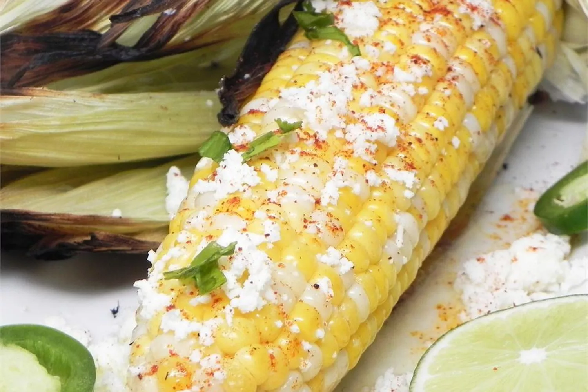

Mexican Corn On The Cob (Elote)

Description
Elote, or Mexican corn on the cob, is a popular street food in Mexico (that’s why it’s also known as Mexican street corn). Corn on the cob is charred on the grill, slathered with butter and mayonnaise, and finished with salty Cotija cheese.
Ingredients
- 4 ears corn, shucked
- ¼ cup melted butter
- ¼ cup mayonnaise
- ½ cup grated cotija cheese
- 4 wedges lime (Optional)
Steps
- Step 1: Preheat an outdoor grill for medium-high heat.
- Step 2: Grill corn on the preheated grill until hot and lightly charred all over, 7 to 10 minutes.
- Step 3: Roll corn in melted butter, then spread evenly with mayonnaise. Sprinkle with cotija cheese and serve with a lime wedge.
Home